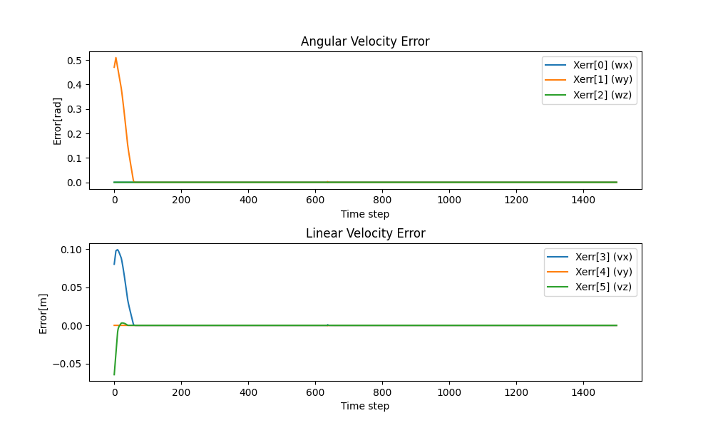
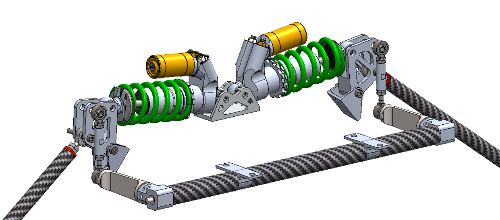
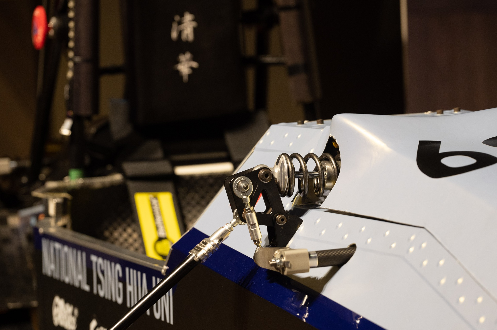
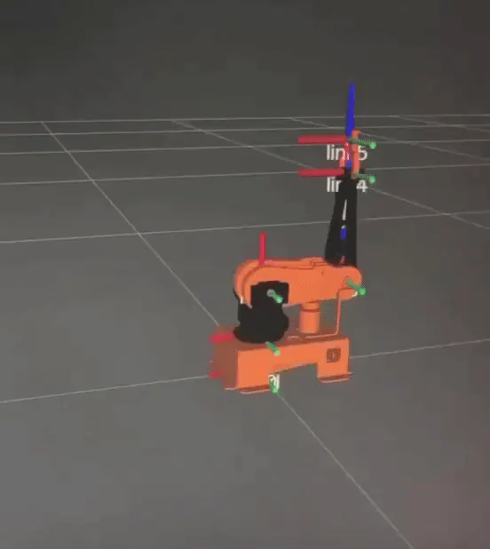
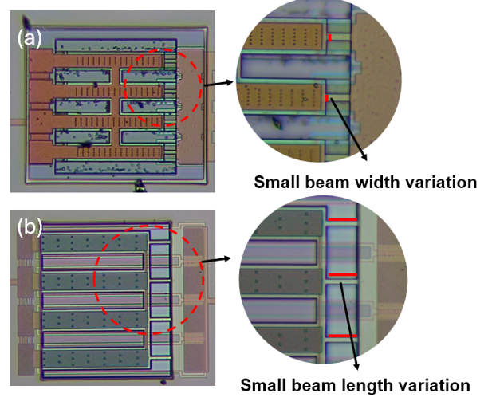

Start with the people and the workflow.
Exploring where robotics could be useful in care settings, beginning with real needs and the work people already do. The goal is to connect a meaningful problem to a practical physical system.
ROBOTICS · EMBODIED AI · AUTONOMOUS SYSTEMS
Robotics, from idea to implementation.
I’m a robotics builder who loves turning ambitious ideas into working machines. My background spans robotics, AI, mechanical engineering, and autonomous systems. I enjoy tackling difficult problems, learning whatever is necessary, and moving quickly from an idea to something that works in the real world.
I’ve led an 80+ member Formula Student racing team, developed autonomous robotic systems, and worked across hardware, software, and early-stage product development. I’m pursuing my M.S. at UC San Diego, with a particular interest in Embodied AI and intelligent machines that solve real-world problems.
I like working with ambitious people who care more about building than talking about building.
M.S. Mechanical & Aerospace Engineering · UC San Diego

A 4-DOF robotic arm solves the Tower of Hanoi using custom inverse kinematics and jerk-limited motion planning.
Explore the project
CARE ROBOTICS · MOBILE MANIPULATION
OnCare brings the product question into focus; mobile manipulation is one of the technical building blocks worth exploring.
Exploring where robotics could be useful in care settings, beginning with real needs and the work people already do. The goal is to connect a meaningful problem to a practical physical system.

Simulated pick-and-place with a four-wheel mobile base and 5-DOF arm. A task-space PI controller tracks an SE(3) end-effector trajectory through the combined chassis-and-arm Jacobian.
View codeSELECTED BUILDS
Robots, autonomous systems, and the engineering behind them.
Prototyped a mechatronic actuator interface integrating da Vinci (dVRK) surgical tools with a Unitree humanoid robot. Developed low-level control mappings and kinematic calibration to address cable-driven coupling in the surgical tools.
Explore the case studySYSTEMS, CONTROL & ENGINEERING
Public projects, ordered around the systems and capabilities they demonstrate.
New work in mobile manipulation, state estimation, planning, and control.

Fuses IMU motion prediction and stereo feature measurements in an SE(3) Extended Kalman Filter to estimate the sensor trajectory and a 3D landmark map. The published figure is qualitative, not a ground-truth accuracy result.
View code
Combines weighted A* on a 26-connected grid, continuous segment-to-box collision checks, shortcutting, and search-state reuse as goals change.
View codeCompares certainty-equivalent control with tabular and feature-based generalized policy iteration on a noisy differential-drive robot. The repository reports a 20-seed study and documents the tracking-versus-safety trade-offs; it does not claim reliable collision avoidance.
View code
Builds cost-aware policies over position, heading, key, and door state for fixed maps and 36 variable 10×10 configurations, with generated animations for the solved runs.
View code
Developed a complete 2D SLAM pipeline to process raw LiDAR scans and odometry data, accurately estimating the robot's trajectory and constructing a high-resolution occupancy grid map.


Developed a quaternion-based orientation tracking pipeline fusing gyroscope motion models with accelerometer observation models. Formulated trajectory estimation as a constrained least-squares optimization on the Riemannian manifold of unit quaternions. Optimized via projected gradient descent, with roll and pitch estimates evaluated against Vicon motion-capture ground truth.


Developed a yaw-moment–based torque-vectoring controller fusing IMU yaw rate, steering angle, and wheel-speed signals. Implemented in C/C++ (ECU loop ~1 kHz), deployed on the racecar and contributed to the team’s P4 acceleration result at Formula Student Czech 2023.


Designed and manufactured a double-wishbone suspension with an integrated anti-roll bar for TH07. Performed FEA to assess the stiffness-to-mass tradeoff. Conducted multibody kinematics analysis in ADAMS and utilized a Pacejka tire model pipeline.

Built an autonomous Tower of Hanoi solver on a 4-DOF robotic arm using ROS and Python. A custom inverse-kinematics solver and time-parameterized, jerk-limited trajectory generator execute the optimal move sequence.
HOW I BUILD
I like owning the full loop: make the problem concrete, build the system, then learn from what happens.
Turn a task into a measurable robotics problem, from mobile manipulation to state estimation.
Connect perception, planning, control, and the physical system instead of treating them as isolated parts.
Use simulation, repeated trials, and clear evidence to understand trade-offs and improve the next version.
TEAM, EXECUTION & PARTNERSHIPS
Building the team and partnerships behind ambitious engineering work.

Led an 80+ member team across eight engineering departments to develop an autonomous 4WD electric racecar, coordinate vehicle integration and industry partnerships. The team won first place at Formula Student Taiwan 2024. Explore the engineering and leadership case study
Led the suspension department for the seventh-generation racecar (TH07), designing and manufacturing a double-wishbone suspension and validating the system through FEA, ADAMS kinematics, and tire-model analysis.
RESEARCH & ENGINEERING
Research spanning robot integration and micro-scale mechanical systems.


Investigated methods to enhance the power handling of CMOS-MEMS resonators by mitigating amplitude-to-phase modulation (AM-PM) noise. Designed and fabricated modified cantilever and fixed-fixed beams utilizing TSMC 0.35 µm CMOS processes to control geometric and capacitive nonlinearities.
CONTACT
I’m glad to connect with builders, engineers, founders, and researchers working on intelligent physical systems.